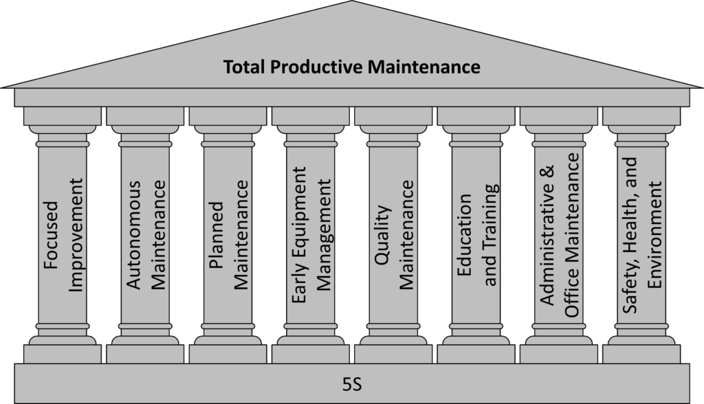

Surviving the Robot: How to Apply Lean to Automated Lines
Topic: Total Productive Maintenance (TPM) & Automation
The Academic View: Lean is about reducing operator walking time and balancing manual assembly cells.
The Reality: You will be assigned to a highly automated robotic production line. You will then realize you have no idea how it works, and somehow you will feel useless and frustrated.
It is intimidating. The Electrical Engineers are talking about “CAN bus communication,” and the Mechanical Engineers are talking about “servo torque.”
Take a breath. You do not need to know how to program the PLC. Your job is to find the problem, measure the loss, and lead the technical team to fix it. Here is how you apply Lean to a machine you don’t fully understand using the TPM (Total Productive Maintenance) framework.

1. The Foundation: 5S is Actually Inspection
Look at the TPM House. The entire structure sits on one foundation: 5S. If you don’t know how the robot’s gearbox works, that’s fine. Can you see if it’s leaking oil?
On automated equipment, 5S is not about making the machine look pretty. Cleaning is Inspection.
- Wipe down the pneumatic lines to see if there is a fresh air leak.
- Sweep the floor to see if a loose bolt vibrated off the conveyor. If you keep the machine to a strict 5S standard, you will catch 80% of machine failures before they break the line.
2. Autonomous Maintenance (The Operator’s Job)
The “hardcore” maintenance technicians are expensive and busy. They should not be wasting time changing air filters or wiping dust off sensors.
As the Lean Engineer, your job is to create visual standards for the machine operators.
- Mark the pressure gauges with a green “safe” zone and a red “danger” zone.
- Create a simple daily checklist: Check oil level, wipe Sensor A, listen for rattling. When the operator maintains the basic health of the machine, the mechanics can focus on the complex breakdowns.
3. Focused Improvement (Leading the Experts)
This is where you show your corporate value. The mechanical engineer knows how to fix the machine. But they usually don’t know what to fix and how to integrate the result into the system.
You bring the Data. Specifically, you track the OEE (Overall Equipment Effectiveness) and search for two things:
- The Micro-Stoppage: Automated machines rarely suffer massive, hour-long breakdowns. Instead, they suffer from 10-second minor stops (e.g., a part gets jammed, and the operator clears it and hits reset in mere seconds). This happens 50 times a shift and destroys efficiency. You track this data and show the engineers exactly which part of the machine is causing the jams.
- The Changeover (SMED): You don’t need a robotics degree to reduce setup time. If a station/machine takes 1 hour to swap from Product A to Product B, use SMED (Single-Minute Exchange of Die). By just taking actions like organizing the tooling, staging the materials beforehand, and standardizing the process, you can cut downtime in half without knowing a line of code.
4. Why I Skipped the Other Pillars (The Real World Rule)
If you look at the TPM House, there are 5 other pillars (Planned Maintenance, Early Equipment Management, etc.).
Ignore them for now. As a junior engineer, you do not own the budget to schedule major Planned Maintenance, and you don’t have the authority to redesign the machine (Early Equipment Management). If you try to do everything, you will step on the toes of the Maintenance Manager and the Senior Engineers.
Stay in your lane. Master the foundation (5S), empower the operators (Autonomous Maintenance), and bring the data (Focused Improvement).
Master those three, and the technical experts will follow your lead.
The Takeaway
Do not let highly automated machines intimidate you. You don’t need an advanced degree in robotics to improve a robotic cell.
- Maintain 5S so mechanical problems are visible.
- Empower the operators to do the basic daily checks.
- Use OEE data to point the technical experts at the real bottlenecks.
The automation engineers write the code. You manage the system. That is how you lead.